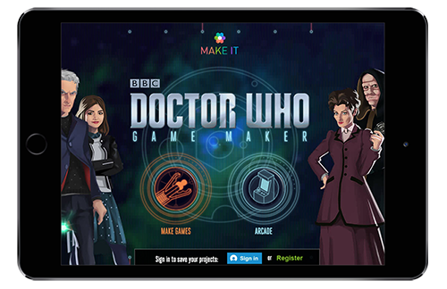

Testing a game maker with kids
BBC

Overview of the project
The BBC developed a tool to allow children to express their creativity by making games or stories (you can try it out here).
They commissioned testing throughout the development to make sure the tool would be:
- easy to get into for first time players
- fun and rewarding for fast-learners and advanced players
- accessible to all, including (but not limited to) children with poor vision, attention deficit or dyslexia
My role
As a UX consultant at System Concepts, I:
- Planned and executed several rounds of testing with children of all ages and abilities.
- Presented findings to stakeholders and lead discussions around the possible improvements.
- Delivered prioritised lists of recommendations.
The research
Some of the rounds of research were conducted in a lab.
For others, another consultant and I went to meet children at their home during school holidays. This meant we were able to gauge how the experience was affected by real-life situations (for instance, being interrupted by siblings).
As a result, we were better able to understand where children got frustrated and lost interest in the game. One example was that the distinction between the "Play" and "Edit" mode wasn't clear enough so kids forgot which mode they were in.
Typically, for each session:
- I started by introducing myself and chatting with the children about the games they liked in order to put them at ease.
- Then, I let them freely explore the game for a while to see what they made of it and what they naturally managed to do.
- Next, I asked them to complete some tasks so that we could cover specific features that the product team was anxious to get tested.
Key achievements
- The first version of the game was frustrating for children, who often got stuck (just look at some of the comments left on the first version of the game when it went live here).
Testing allowed to find out what was wrong and fix it. The interface has been adjusted accordingly. The new versions of the games also introduce complex concepts like object physics more carefully, so no prior knowledge is needed to understand how it will affect objects.
- Testing also allowed to refine the themes and visuals. The initial game was described as 'childish' by kids, who wouldn't have wanted their friends to know they played it. The most recent games are so cool that kids aren't afraid of sharing their creations on social media.
<< See other examples of work